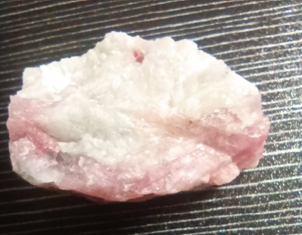
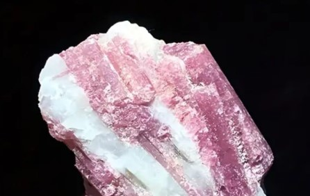

La tormalina rosa (nota anche come rubellite) è una varietà della famiglia delle tormaline, un gruppo di silicati complessi di boro e alluminio, con formula generale Na(Li,Al)₃Al₆(BO₃)₃Si₆O₁₈(OH)₄. Il suo caratteristico colore rosa, che spazia dal rosa pallido al rosso intenso (rubellite), è dovuto principalmente alla presenza di manganese (Mn²⁺) o, in alcuni casi, a tracce di litio. Le tormaline rosa più pregiate presentano una tonalità vivace e satura, senza venature scure.
La tormalina rosa si forma in pegmatiti granitiche e in rocce metamorfiche, spesso associata a quarzo, lepidolite, albite e altre tormaline. I cristalli possono presentare fenomeno di pleocroismo: osservati da diverse angolazioni, mostrano variazioni di intensità del colore. I principali giacimenti si trovano in Brasile (Minas Gerais), Madagascar, Afghanistan, Mozambico e Stati Uniti (California).
Nell’antichità la tormalina rosa era considerata una pietra di grande potere spirituale, capace di risvegliare la compassione e la capacità di amare incondizionatamente. Veniva utilizzata da guaritori e sciamani per lenire le ferite emotive e aprire il cuore alla gioia. Nella tradizione dell'antico Egitto, si credeva che la tormalina avesse attraversato un arcobaleno nel suo viaggio dalla Terra al Sole, assorbendo tutti i colori.
In cristalloterapia, la tormalina rosa è la pietra dell’amore incondizionato, dell’autocompassione e della guarigione emotiva. Aiuta a rilasciare vecchi dolori, a perdonare e a ritrovare la fiducia in sé stessi. La sua vibrazione dolce ma potente è particolarmente indicata per chi ha subito traumi emotivi o fatica ad amarsi.
Posizionata sul quarto chakra (Anahata, il chakra del cuore) favorisce l'apertura emotiva, la guarigione delle ferite interiori, la capacità di dare e ricevere amore senza condizioni, e aiuta a bilanciare le emozioni, trasformando la paura in coraggio e la tristezza in gioia.

La tormalina rosa è da secoli considerata una delle pietre più potenti per il lavoro sul cuore e sulle emozioni. La sua energia agisce come un balsamo sull'anima, sciogliendo blocchi emotivi, paure e risentimenti. È particolarmente indicata per chi vive periodi di tristezza, solitudine o stanchezza emotiva, poiché infonde una sensazione di calore, protezione e fiducia nel futuro.
Tenere una tormalina rosa sul comodino o vicino al letto si ritiene aiuti a dormire serenamente e a risvegliarsi con il cuore leggero, favorendo sogni ristoratori e una maggiore consapevolezza emotiva al risveglio. Portata con sé, invita a relazioni più autentiche e a un amore più profondo per sé e per gli altri.
- Amore incondizionato e autocompassione
- Guarigione delle ferite emotive
- Perdono e riconciliazione
- Fiducia in sé e serenità interiore
- Sul comodino per sogni sereni
- Sul chakra del cuore durante la meditazione
- In camera da letto per armonia affettiva
- Come gioiello per attrarre relazioni sincere
“Nell’antichità la tormalina era considerata la pietra che aveva attraversato l’arcobaleno, assorbendo tutti i colori. La varietà rosa era apprezzata per la sua capacità di risvegliare la compassione e l’amore incondizionato.
In cristalloterapia, la tormalina rosa è la pietra dell’amore incondizionato, dell’autocompassione e della guarigione emotiva. Aiuta a rilasciare vecchi dolori, a perdonare e a ritrovare la fiducia in sé stessi.
Tenere una tormalina rosa sul comodino o vicino al letto si ritiene aiuti a dormire serenamente e favorire gli affetti.
Posizionata sul quarto chakra (Anahata, chakra del cuore) favorisce l’apertura emotiva, la guarigione delle ferite interiori, la capacità di dare e ricevere amore senza condizioni.”

Purezza e cura
La tormalina rosa è resistente (durezza 7-7,5). Puoi pulirla con acqua tiepida e sapone neutro, usando un panno morbido. Evita sbalzi termici e urti violenti. Ricaricala alla luce solare del mattino o al chiaro di luna. Non teme l’acqua, ma evita immersioni prolungate.
Giacimenti e varietà
I migliori cristalli di tormalina rosa provengono dal Brasile (Minas Gerais), Madagascar, Afghanistan, Mozambico e California. La varietà più pregiata è la rubellite, dal colore rosso intenso, molto rara e ricercata in gemmologia.
Scienza e simbolo
La mineralogia spiega il colore rosa con la presenza di manganese; la tradizione la associa all’amore e alla guarigione del cuore. Un perfetto connubio tra chimica e spiritualità, ideale per chi cerca equilibrio emotivo e relazioni autentiche.